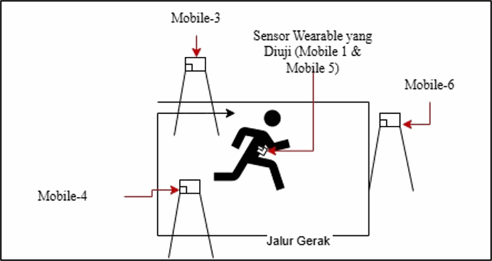
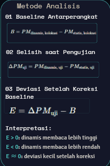
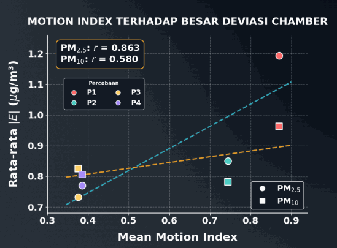
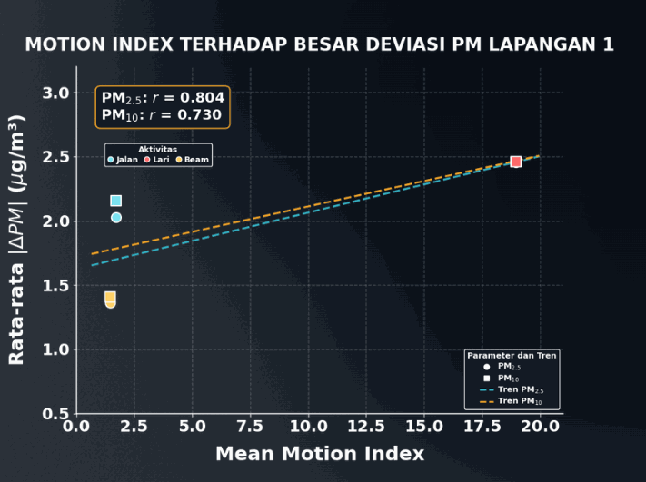
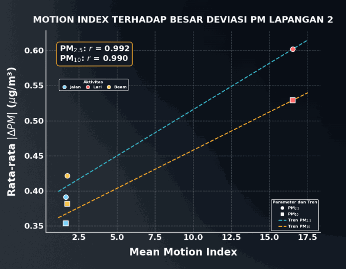

Project · Measurement Analysis
Sensor Testing — Effect of Motion on Particulate Measurement
Part of my undergraduate final project: "Development of a Wearable Air Quality Monitoring System with Human Activity Recognition Integration for Analyzing the Effect of Motion on Particulate Measurement". This page covers the motion-effect experiments. Other parts:
Why motion matters
A wearable moves with the user, which causes orientation changes, mechanical vibration and airflow turbulence around the inlet of the SPS30 particulate sensor (laser light-scattering principle). The experiment asked: does body motion distort PM2.5 and PM10 readings, and how large is the deviation?
What I did
- Prepared chamber, outdoor rotation-platform and field-activity tests; compared two dynamic units with three static controls across four chamber experiments.
- Processed sensor/reference data in Python/Excel through timestamp alignment, physical-range checks, outlier filtering and inter-device comparisons.
- Documented test results in plots and reports; examined airflow, inlet orientation and device variation as possible causes of measurement deviations.

Testing method: static vs. dynamic
- Dynamic group (Mobile 1 and 5): worn on the user's chest or mounted on a rotating rig.
- Static control group (Mobile 3, 4 and 6): kept at a fixed position to represent ambient particulate conditions.
Tests ran in three scenarios: (1) an enclosed chamber, (2) a controlled outdoor setting and (3) field tests covering sitting, walking, running and riding.
Baseline correction
Comparing raw differences (ΔPM = PMdynamic − PMstatic) can be misleading because of bias between sensor units that remains after calibration. Before and after each test, all devices were co-located to determine their baseline offset (B), and the motion effect was taken as E = ΔPM − B.

Results
After correction, dynamic conditions tended to read lower particulate concentrations (negative deviation) than the static control. A Pearson correlation was calculated between movement intensity (Mean Motion Index from the HAR algorithm) and the absolute deviation |E| in µg/m³:
- Chamber: r = 0.863 for PM2.5 and r = 0.580 for PM10 across test schemes P1–P4.
- Field: r = 0.804 for PM2.5 in Field 1 and r = 0.992 in Field 2; stronger motion such as running produced larger deviation.
- Maximum deviation while running was about 1 to nearly 3 µg/m³, within the sensor's error tolerance.



Conclusion
Combining IoT hardware, HAR feature extraction and statistical analysis, the research shows that personal air quality data should be interpreted together with the mechanical context of the wearer's body. The findings provide a basis for future motion-compensation algorithms in wearable sensors.